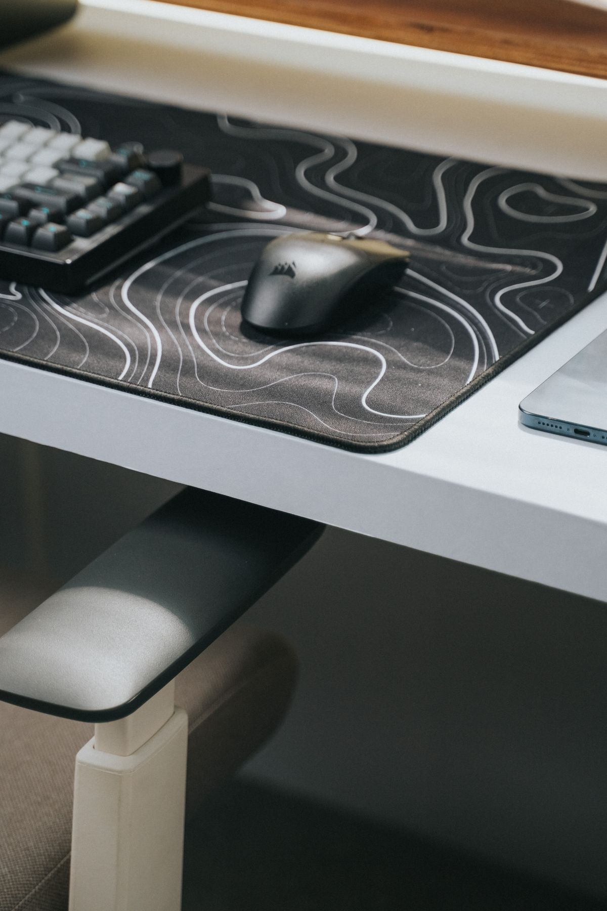
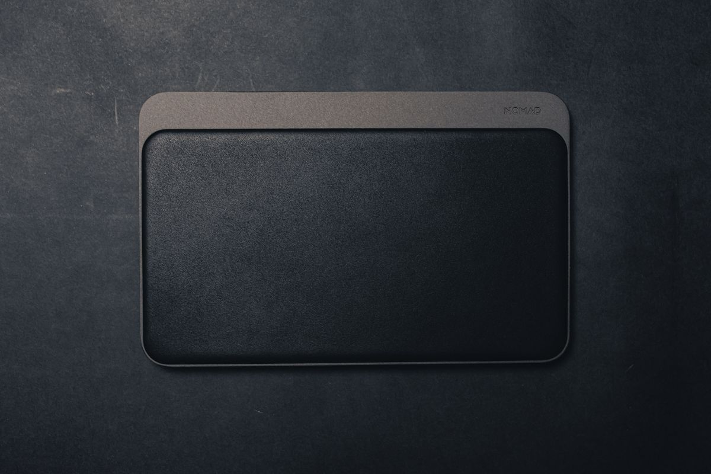
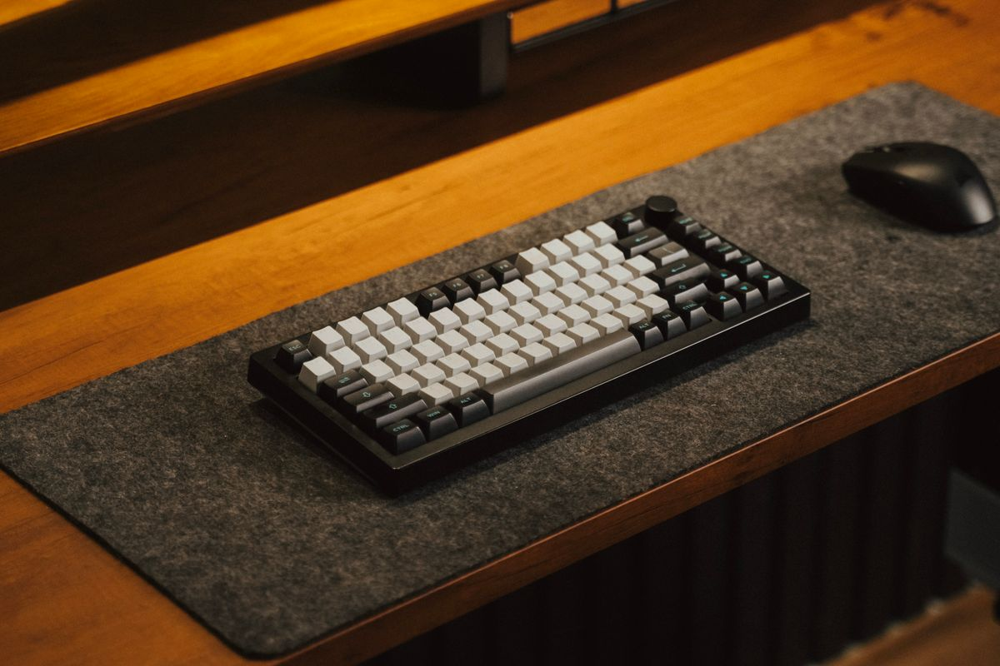
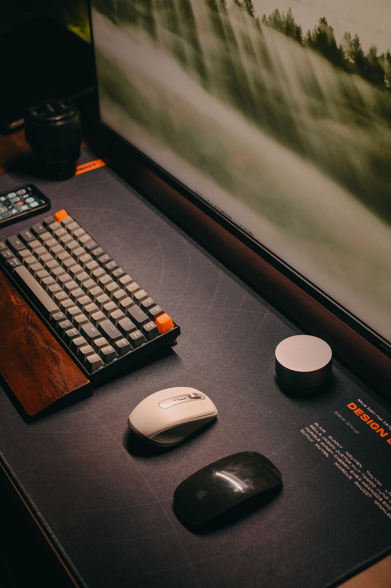
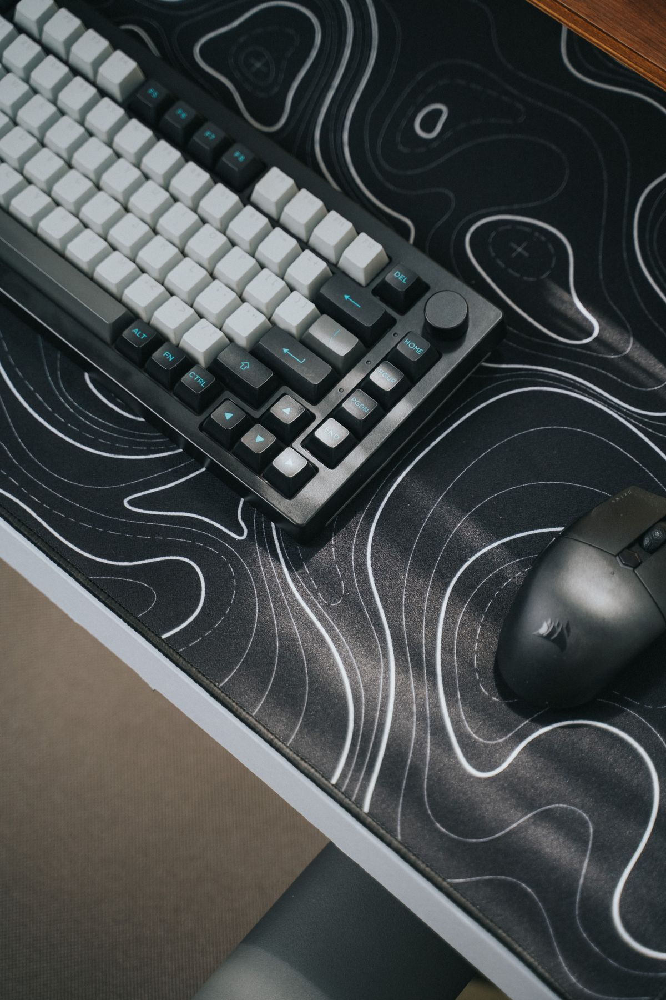
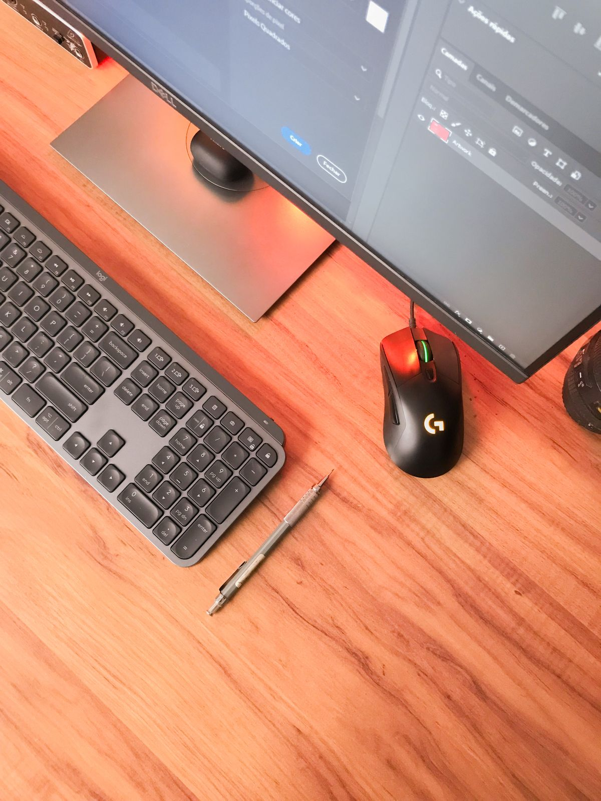

แผ่นรองโต๊ะทำงาน (Desk Mat) เปลี่ยนโต๊ะธรรมดาให้ดูโปรและใช้งานลื่นไหลขึ้น 2026
แผ่นรองโต๊ะทำงานไม่ใช่แค่ของตกแต่ง แต่ช่วยปกป้องโต๊ะและใช้งานเมาส์ได้ลื่นไหลขึ้น รวมแผ่นรองโต๊ะยอดนิยม พร้อมเกณฑ์การเลือกซื้อ ซื้อผ่าน Shopee
อัปเดต กรกฎาคม 2026
ถ้าสังเกตโต๊ะทำงานของคนที่จัดโต๊ะสวย ๆ ตามโซเชียลมีเดีย จะเห็นว่าเกือบทุกโต๊ะมีแผ่นรองขนาดใหญ่วางอยู่ใต้คีย์บอร์ด เมาส์ และบางครั้งก็รองใต้แล็ปท็อปด้วย อุปกรณ์ชิ้นนี้เรียกว่า desk mat หรือแผ่นรองโต๊ะทำงาน ซึ่งนอกจากจะช่วยให้โต๊ะดูเป็นระเบียบและมีสไตล์มากขึ้นแล้ว ยังมีประโยชน์ใช้สอยจริงหลายอย่างที่คนเพิ่งเริ่มจัดโต๊ะทำงานอาจยังไม่รู้ บทความนี้จะพาไปทำความรู้จักแผ่นรองโต๊ะทำงานให้มากขึ้น พร้อมแนะนำแบบที่น่าลงทุน
ทำไม Desk Mat ถึงไม่ใช่แค่ของตกแต่ง
หน้าที่แรกของแผ่นรองโต๊ะคือการปกป้องพื้นผิวโต๊ะจากรอยขีดข่วน คราบกาแฟ หรือรอยจากขาเมาส์ที่เสียดสีกับผิวโต๊ะเป็นเวลานาน โดยเฉพาะโต๊ะไม้จริงหรือโต๊ะผิวเคลือบที่มีราคาสูง การมีแผ่นรองช่วยยืดอายุการใช้งานของโต๊ะได้มาก
นอกจากนี้แผ่นรองขนาดใหญ่ยังทำหน้าที่เป็นแผ่นรองเมาส์ที่ให้พื้นที่เลื่อนกว้างกว่าแผ่นรองเมาส์ทั่วไป ทำให้ทำงานกราฟิกหรือเล่นเกมที่ต้องเลื่อนเมาส์ระยะไกลได้ลื่นไหลกว่า และยังช่วยสร้างขอบเขตพื้นที่ทำงานที่ชัดเจนบนโต๊ะ ทำให้การจัดวางอุปกรณ์อื่น ๆ เป็นระบบมากขึ้นโดยไม่ต้องคิดเยอะ
รวมแผ่นรองโต๊ะทำงานยอดนิยมที่น่าลองใช้

1. เดสก์แมทหนังเทียม PU ผิวเรียบ
วัสดุหนัง PU ให้สัมผัสหรูหรา เช็ดทำความสะอาดคราบน้ำหรือกาแฟได้ง่ายด้วยผ้าชุบน้ำหมาด ๆ เหมาะกับคนที่ชอบโต๊ะทำงานสไตล์มินิมอลหรือโทนสีเอิร์ธโทน เดสก์แมทหนังเทียม PU สำหรับโต๊ะทำงาน มักมีให้เลือกสองด้านสองสีในผืนเดียว พลิกใช้ได้ตามอารมณ์หรือธีมโต๊ะที่เปลี่ยนไป

2. เดสก์แมทผ้าสักหลาด (Felt Desk Mat)
ผ้าสักหลาดให้สัมผัสนุ่มและอบอุ่นกว่าหนัง เหมาะกับคนที่ชอบโทนสไตล์ Scandinavian หรือ Cozy ข้อดีคือดูดซับเสียงจากการพิมพ์คีย์บอร์ดได้ดีกว่าผิวแข็ง ช่วยลดเสียงรบกวนในห้องที่เงียบ เดสก์แมทผ้าสักหลาดสำหรับโต๊ะทำงาน เหมาะกับคนที่ทำงานที่บ้านและอยากได้บรรยากาศโต๊ะที่รู้สึกผ่อนคลาย

3. เดสก์แมทยางรองเมาส์ขนาดใหญ่แบบเกมมิ่ง
สำหรับคนที่เน้นการใช้งานจริงมากกว่าความสวยงาม เดสก์แมทยางผิวสัมผัสแบบเดียวกับแผ่นรองเมาส์เกมมิ่งให้การเลื่อนเมาส์ที่แม่นยำและลื่นไหลกว่าวัสดุหนังหรือผ้า เดสก์แมทยางขนาดใหญ่สไตล์เกมมิ่ง เหมาะกับคนที่ทำงานกราฟิกที่ต้องใช้เมาส์แม่นยำ หรือเล่นเกมควบคู่กับการทำงานบนโต๊ะเดียวกัน

4. เดสก์แมทกันน้ำขอบเย็บพร้อมช่องเก็บสาย
บางรุ่นออกแบบมาให้มีขอบยกเล็กน้อยกันของเหลวไหลออกนอกแผ่น เดสก์แมทกันน้ำ เหมาะกับคนที่มักวางแก้วน้ำหรือกาแฟไว้ใกล้อุปกรณ์อิเล็กทรอนิกส์บนโต๊ะ

5. เดสก์แมทขนาดจัมโบ้สำหรับคลุมทั้งโต๊ะ
สำหรับคนที่อยากได้ความเรียบเนียนทั้งผืนโต๊ะ เดสก์แมทขนาดใหญ่พิเศษที่คลุมพื้นที่โต๊ะได้เกือบทั้งหมดเป็นตัวเลือกที่ช่วยให้โต๊ะดูเป็นชิ้นเดียวกัน ไม่เห็นรอยต่อระหว่างพื้นผิวโต๊ะเดิมกับอุปกรณ์ที่วางอยู่ เดสก์แมทขนาดจัมโบ้สำหรับคลุมทั้งโต๊ะทำงาน เหมาะกับโต๊ะทำงานที่เน้นถ่ายรูปลงโซเชียลหรือทำ live สตรีมมิ่งที่ต้องการภาพพื้นหลังโต๊ะที่ดูเรียบร้อย
เกณฑ์การเลือกซื้อแผ่นรองโต๊ะทำงาน
ขนาดคือสิ่งแรกที่ต้องวัดก่อนซื้อ ควรวัดความกว้างและความลึกของโต๊ะจริง แล้วเผื่อขอบไว้เล็กน้อยไม่ให้แผ่นรองใหญ่จนล้นออกนอกโต๊ะ หรือเล็กจนไม่ครอบคลุมพื้นที่วางคีย์บอร์ดและเมาส์พร้อมกัน
วัสดุผิวสัมผัสควรเลือกให้ตรงกับการใช้งานหลัก ถ้าต้องใช้เมาส์แบบแม่นยำสูงควรเลือกผิวที่ให้แรงเสียดทานเหมาะสมกับเซนเซอร์เมาส์ ส่วนคนที่เน้นความสวยงามและการดูแลรักษาง่ายอาจเลือกหนัง PU ที่เช็ดทำความสะอาดสะดวกกว่าผ้า
ความหนาและน้ำหนักของแผ่นก็มีผลต่อความรู้สึกขณะพิมพ์งาน แผ่นที่บางเกินไปอาจลื่นไถลง่าย ส่วนแผ่นที่มีฐานยางกันลื่นด้านล่างจะช่วยให้แผ่นอยู่กับที่ไม่ขยับเวลาใช้งานแรง ๆ
สรุป
แผ่นรองโต๊ะทำงานเป็นอุปกรณ์ราคาไม่สูงแต่เปลี่ยนบรรยากาศและการใช้งานโต๊ะได้อย่างเห็นได้ชัด ทั้งในแง่การปกป้องพื้นผิวโต๊ะ ความลื่นไหลในการใช้เมาส์ และภาพลักษณ์โดยรวมของพื้นที่ทำงาน การเลือกวัสดุและขนาดให้เหมาะกับสไตล์และรูปแบบการใช้งานของตัวเอง จะช่วยให้โต๊ะทำงานดูเป็นระเบียบและน่านั่งทำงานมากขึ้นในทุกวัน
บทความนี้มีลิงก์ affiliate เมื่อคุณซื้อผ่านลิงก์ เราอาจได้รับค่าคอมมิชชั่นโดยที่คุณไม่ต้องจ่ายเพิ่ม